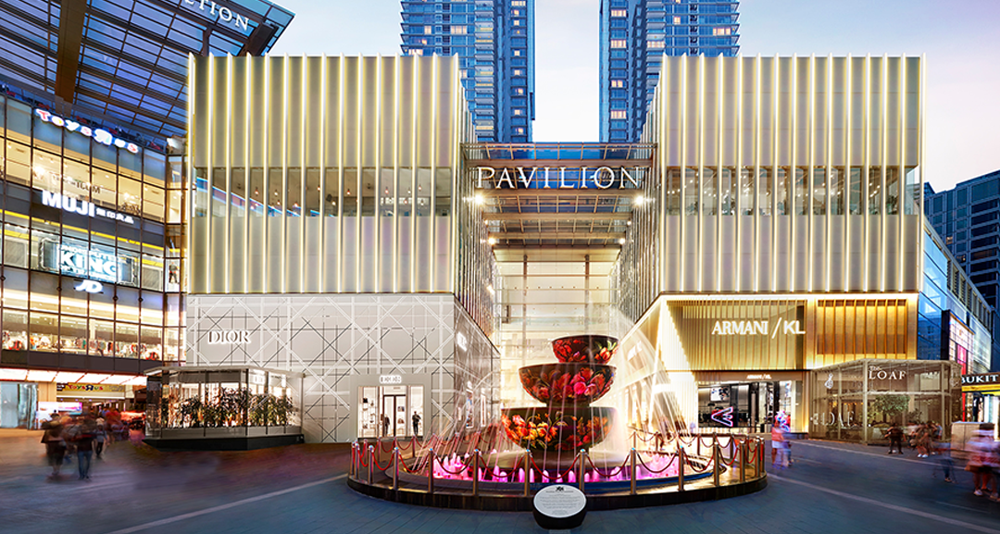
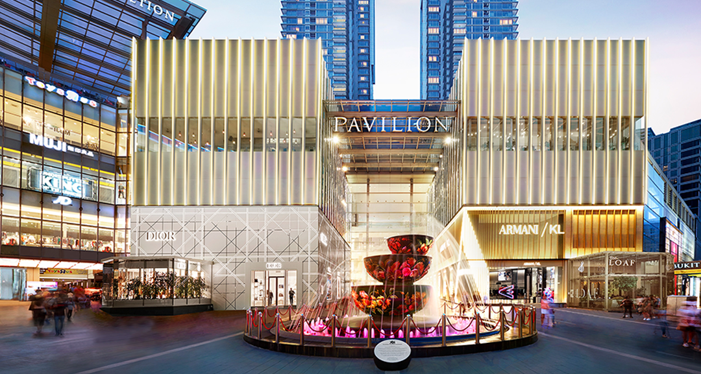

- KLCC
- Zoo Negara
- Taman Tugu Negara
- Pasar Seni
- Bukit Bintang
- Saloma Link
Kuala Lumpur City Centre (KLCC) is a multipurpose development area in Kuala Lumpur, Malaysia. The area is located around Jalan Ampang, Jalan P. Ramlee, Jalan Binjai, Jalan Kia Peng and Jalan Pinang. There are also hotels within walking distance such as G Tower, Mandarin Oriental, Grand Hyatt Kuala Lumpur and InterContinental Kuala Lumpur.
The National Zoo (Malay: Zoo Negara) is a zoo in Malaysia located on 110 acres (45 ha) of land in Ulu Klang, Gombak District, Selangor, Malaysia. Zoo Negara is home to 5137 animals of 476 different species.[6] Over the years, the zoo has transformed itself to an open concept zoo with over 90% of its animals kept in spacious exhibits with landscape befitting its nature.
The Taman Tugu is located to the north of Taman Botani Perdana with Tugu Negara in the south-west, Padang Merbok in the south-east and Bank Negara’s Lanai Kijang to the east of the site.
Central Market Kuala Lumpur is located at Jalan Tun Tan Cheng Lock (Foch Avenue) and the pedestrian-only section of Jalan Hang Kasturi (Rodger Street), a few minutes away from Petaling Street.
Bukit Bintang stylised as Bintang Walk or Starhill, the latter being a translation of the Malay name is the shopping and entertainment district of Kuala Lumpur, Malaysia. It encompasses Jalan Bukit Bintang (Bukit Bintang Road in English) and its immediate surrounding areas. The area has long been Kuala Lumpur's most prominent retail belt that is home to many landmark shopping centres, al-fresco cafés, bars, night markets, food street, mamak stalls as well as hawker-type eateries. This area is popular among tourists and locals, especially among the youths.
Saloma Link (Malay: Pintasan Saloma) is a 69 metres combined pedestrian and bicyclist bridge across the Klang River in Kuala Lumpur. The bridge’s architecture is inspired by the sireh junjung (betel nut leaf arrangement) concept, which is an integral part of a Malay wedding. At night, the bridge cannot be accessed (from 01:00 until 05:00 from Monday to Saturday and 0:30 until 05:00 on Sundays and public holidays).The name is derived from the Malaysian-Singaporean singer Saloma, who is buried at the nearby Jalan Ampang Muslim Cemetery.